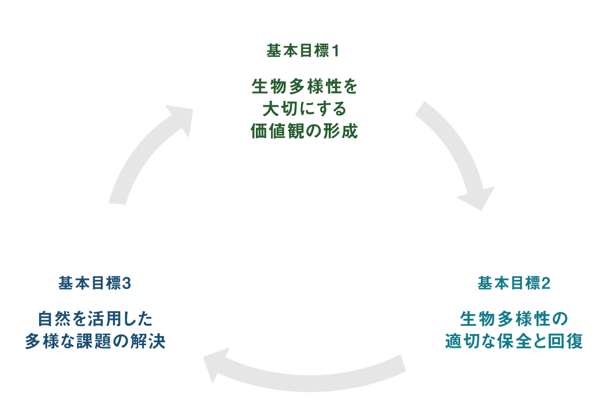

3つの基本目標
戦略が掲げる具体的な目標と、2030年までの数値指標
基本目標 1
価値観の形成
生物多様性を大切にする価値観の形成
私たちの暮らしは、豊かな生物多様性の恩恵によって成り立っています。このことに、市民一人ひとりが気づき、大切にする価値観を醸成する（＝自然の「ファン」を増やす）ことが、ネイチャーポジティブの全てのはじまりです。
2030年目標値
生物多様性に関する市民認知度
60%
保全活動への参加率
50%
市民1人1日あたりの家庭ごみ排出量
420g以下
基本目標 2
保全・回復
生物多様性の適切な保全と回復
市民、団体、企業、教育研究機関、行政等の関係者（自然のファン）が一丸となってできる限り多くの「ヒト・モノ・カネ・情報」をネイチャーポジティブにもたらし、生物多様性の保全と回復の取組を実践していくことが求められています。
2030年目標値
陸地の保全地域（最大）
30%
自然共生サイトの認定数（累計）
5カ所
保全活動への参加率（再掲）
50%
基本目標 3
課題解決
自然を活用した多様な課題の解決
豊かな生物多様性は、我々に様々な恩恵を与えてくれ、経済社会課題の解決にも役立ちます（NbS: Nature based Solutions）。自然が市の魅力向上につながると、ネイチャーポジティブの重要性が再認識されます。
2030年目標値
ネイチャーポジティブ宣言参加団体数
30団体
ネイチャーポジティブ経営に取り組む
市内企業数 30企業
市内企業数 30企業

推進体制
北九州ネイチャーポジティブセンター
- 北九州市の10の自然関連施設を北九州ネイチャーポジティブセンターと位置づけ、戦略の推進拠点としています。市内の生物多様性に関する情報の収集・発信や普及啓発を行うとともに、市民や企業などによるネイチャーポジティブの取組を支援します。また、「北九州ネイチャーポジティブネットワーク」の事務局として、ネットワークの運営や連携の促進を担います。
北九州ネイチャーポジティブネットワーク
- 北九州ネイチャーポジティブネットワークは、多様な主体の連携・協働を促進するためのプラットフォームです。企業や団体、教育・研究機関、市民などがつながり、それぞれの知見や資源を生かしながら、連携・協働によるプロジェクトの創出や情報共有を進め、地域全体でネイチャーポジティブの取組を広げることを目的としています。

私たちにできること
日々の暮らしの中で、一人ひとりが無理なくできる5つのアクション
1
たべよう
地元でとれたものを食べ、旬のものを味わいます。
2
ふれよう
自然の中へ出かけ、動物園、水族館や植物園などを訪ね、自然や生き物にふれます。
3
つたえよう
自然の素晴らしさや季節の移ろいを感じて、写真や絵、文章などで伝えます。
4
まもろう
生き物や自然、人や文化との「つながり」を守るため、地域や全国の活動に参加します。
5
えらぼう
日々の生活で環境に優しい行動を選択します。
地元の食材や旬の食材を選ぼう！
地元の食材や旬の食材を選ぶことで、田んぼや畑などにすむ生きものを守ることに加えて、地元の食文化を理解することや、生産や輸送に必要なエネルギーを削減することにもつながります。
そのため、生物多様性の保全に加えて、シビックプライドの醸成や地球環境の保全にも貢献できます。
地元の食材や旬の食材を選ぶことで、田んぼや畑などにすむ生きものを守ることに加えて、地元の食文化を理解することや、生産や輸送に必要なエネルギーを削減することにもつながります。
そのため、生物多様性の保全に加えて、シビックプライドの醸成や地球環境の保全にも貢献できます。
自然や生きものに触れよう！
自然の中に出かけたり、公園や動物園などを訪ねることで、自然の中で過ごすことの楽しさや、生きものの面白さを体感することができ、生物多様性の大切さを実感することができます。
緑や花を育てよう！
家の庭やベランダなどの小さな自然をつなげることで、北九州市全体の生態系ネットワーク（生きもののつながり）を豊かにすることができます。
自然の中に出かけたり、公園や動物園などを訪ねることで、自然の中で過ごすことの楽しさや、生きものの面白さを体感することができ、生物多様性の大切さを実感することができます。
緑や花を育てよう！
家の庭やベランダなどの小さな自然をつなげることで、北九州市全体の生態系ネットワーク（生きもののつながり）を豊かにすることができます。
生物多様性を知ろう！
自然や生きものに関する本を読んだり、身近な植物、鳥や虫について調べることで、生物多様性への興味が湧き、すぐ近くにある自然や生きもののことが見えてきます。
みんなに伝えよう！
自然や生きものに触れて感じたことを家族や友人と話し合ったり、写真や絵でみんなに伝えることで、生物多様性の輪が広がります。
自然や生きものに関する本を読んだり、身近な植物、鳥や虫について調べることで、生物多様性への興味が湧き、すぐ近くにある自然や生きもののことが見えてきます。
みんなに伝えよう！
自然や生きものに触れて感じたことを家族や友人と話し合ったり、写真や絵でみんなに伝えることで、生物多様性の輪が広がります。
保全活動に参加してみよう！
自然や生きものを守る活動や、生きものの観察会などのイベントに参加しましょう。
北九州市では、農業体験、エコツアー・エコツーリズムなどの体験活動や、ワークショップや講演会などの環境学習活動、清掃活動などのボランティア活動といった、様々な市民参加型のイベントを企画・実施しています。
こうした様々なイベントに参加し、生物多様性を守る活動に直接関わることで、生物多様性を大切にする価値観が形成されます。
自然や生きものを守る活動や、生きものの観察会などのイベントに参加しましょう。
北九州市では、農業体験、エコツアー・エコツーリズムなどの体験活動や、ワークショップや講演会などの環境学習活動、清掃活動などのボランティア活動といった、様々な市民参加型のイベントを企画・実施しています。
こうした様々なイベントに参加し、生物多様性を守る活動に直接関わることで、生物多様性を大切にする価値観が形成されます。
環境に優しい商品を選ぼう！
日々の買い物の中でエコラベルなどの環境に配慮したラベルがついている商品を選択することで、生産する企業側の生物多様性への配慮を促すことにつながります。
ごみを減らそう！
ごみの分別や食品ロスを出さないこと、また、プラスチックごみを削減するためにマイバッグを持参することで、ごみの量が減り、生物多様性の保全につながります。
日々の買い物の中でエコラベルなどの環境に配慮したラベルがついている商品を選択することで、生産する企業側の生物多様性への配慮を促すことにつながります。
ごみを減らそう！
ごみの分別や食品ロスを出さないこと、また、プラスチックごみを削減するためにマイバッグを持参することで、ごみの量が減り、生物多様性の保全につながります。